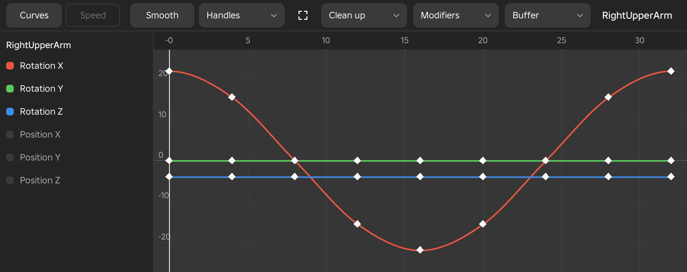

Curve Editor
The Curve editor draws each channel of a limb as a line over time. Change the line and the motion between the keys changes with it. It is for finding why a move looks stiff or wobbly, and for shaping the motion by hand when an easing style is not enough. The window is available in the Animate workspace.

The Graph
- Menu
- View ‣ Windows ‣ Curve editor
- Workspace
- Animate
The graph shows the selected limb as six channels: Rotation X, Y and Z in degrees, and Position X, Y and Z in studs. Time runs from left to right with the frame numbers along the top, and the value goes up the side. The playhead is a white line, and every key is a diamond on its curve. Each channel has its own colour, with the rotations in red, green and blue.
The list on the left names the selected limb and its six channels. Clicking a channel shows or hides its curve and fits the view to the curves that are left. The three rotation channels show when the window is first opened. With nothing selected the graph asks you to select a limb.
Rotation curves are drawn without jumps, so a turn that passes 180° continues smoothly instead of leaping to the other side. A key you have not shaped in the editor is drawn the way its easing plays: a Steady key is a straight line, a Hold key waits until the next key, and the others are smooth.
Options
- Curves, Speed
- The switch at the left of the toolbar. Curves draws the channels, and Speed shows how fast the end of the limb moves. See Speed View.
- Wheel
- Zooms the time axis about the cursor. Holding Ctrl zooms the values instead.
- Right-drag
- Pans the graph in both directions.
- Fit the curves
- The fit button on the toolbar frames every shown curve over the whole clip. Home does the same.
Example
For example, if an arm seems to wobble, switch on only Rotation X, fit the view, and look for a curve that rises and falls between two keys where it should travel steadily one way.
Selecting and Dragging Keys
- Workspace
- Animate
You change a curve by selecting keys and dragging them. A drag changes the keys' values, and the rig follows as you drag. A handle is the short line that comes out of a selected key, and it sets the slope of the curve as it leaves or arrives at that key. A drag is one undo step.
Options
- Click a key
- Selects it. Holding Shift adds keys to the selection.
- Click a curve
- Selects every key on that curve, on the limb the curve belongs to.
- Drag on empty space
- Draws a box and selects the keys inside it. A plain click on empty space selects nothing.
- Drag a selected key up or down
- Changes the value of every selected key by the same amount.
- Drag a handle
- Changes the slope of the curve at its key. A handle stays on its own side of the key, so time only runs forward. Dragging a handle on a key that is not Free or Aligned makes it Aligned, so the two handles stay in one line.
Notes
A key on a locked limb does not change, and the message names the limb that is locked. A key you change here plays as the graph shows it, with each channel on its own curve between the keys. When the clip is saved, a span shaped this way is written as a pose on every frame, as an eased span is.
Frame and Value Boxes
- Workspace
- Animate
When a key is selected, two boxes appear in the toolbar with its frame and its value. Type a frame to move the selected keys there. Type a value to set every selected key on that curve to it, in degrees for a rotation or studs for a position. Both are exact, which a drag is not.
When there is room, the title in the toolbar names the limb and the channel of the selected key.
Options
- Alt and drag a key
- Moves the selected keys in time, one whole frame at a time. A move is refused where another key is in the way, and the keys cannot be moved past the ends of the clip.
- Ctrl and drag a key
- Snaps its value to whole degrees for a rotation, or to tenths of a stud for a position.
Example
For example, to land a hit on an exact frame, select its keys, type the frame in the frame box, and press Enter. To set an arm's turn to exactly 45°, select the key on its rotation curve and type 45 in the value box.
Smooth
- Menu
- Curve editor toolbar ‣ Smooth
- Workspace
- Animate
Smooth turns the selected keys into smooth curves that never overshoot their keys. It gives each key the handle type Smooth (auto clamped), which is smooth through the neighbouring keys and flat at a peak or a dip. With no key selected, it smooths every key of the limb.
When a span is drawn with the tag Overshoots, with a number of degrees beside it, the curve passes beyond one of its keys, and Smooth removes that.
Example
For example, if an arm swing made from straight segments shows a corner at every key, select the limb and press Smooth. The corners round off, and the arm keeps reaching each key.
Handles
- Menu
- Curve editor toolbar ‣ Handles
- Shortcut
- V
- Workspace
- Animate
The Handles dropdown sets how the curve passes through the selected keys, choosing from seven handle types. When one key is selected, the dropdown reads Handles with the type of that key's curve. V opens the same list at the cursor. With no key selected, the dropdown changes every key of the limb.
Each channel of a key has its own handle type. A key selected on some of its curves changes on those channels only, so you can make one channel straight and leave the others smooth.
Options
- Auto
- Smooth through the neighbouring keys. It can overshoot a key.
- Smooth (auto clamped)
- Smooth, flat at a peak or a dip, and never past its keys.
- Flat
- Level on both sides of the key.
- Free
- Each handle moves on its own.
- Aligned
- The two handles stay in one line.
- Linear (straight)
- A straight line to the neighbouring keys.
- Hold
- The value waits at this key until the next key.
Example
For example, give the key at the moment of impact the type Hold on its position channels, so the weapon waits there for a beat before the follow-through starts.
Notes
The Preferences window has a Curves group with Auto handles, which can be Standard or Even acceleration. Standard slopes an automatic handle through the keys on either side of it, and Even acceleration takes the gaps between the keys into account. It applies to every Auto and Smooth key.
Buffer
- Menu
- Curve editor toolbar ‣ Buffer
- Shortcut
- Shift+B swaps with the buffer
- Workspace
- Animate
The buffer keeps a copy of the shown curves so you can compare them with the changes you make, and put the copy back if the new shape is worse. The copy is drawn dimmed underneath the live curves. It holds the keys of the limbs shown in the graph.
Options
- Snapshot
- Keeps a copy of the curves as they are now.
- Swap with the buffer
- Puts the copy back as the live keys and keeps the current ones in the buffer. Swapping again goes back. It is one undo step, and locked limbs are left alone. If the buffer is empty the status line asks you to take a snapshot first.
- Show the buffer
- Shows or hides the dim copy.
- Clear the buffer
- Forgets the copy.
Example
For example, take a snapshot, push the overshoot of a swing further, and play it. If it looks worse, swap with the buffer to be back where you started.
Several Limbs
- Workspace
- Animate
Limbs that have selected keys on the timeline show their curves beside the current limb's, lighter and thinner. Their keys are selected and dragged in the same way as the current limb's, and the toolbar names the current limb with the number of others beside it.
Example
For example, select the keys of an arm and its hand on the timeline and open the Curve editor, to make both reach their peaks on the same frame.
Clean up and Curve Modifiers
- Menu
- Curve editor toolbar ‣ Clean up
- Curve editor toolbar ‣ Curve modifiers
- Workspace
- Animate
Two buttons on the toolbar open the same commands as the Key menu, so you can use them without leaving the graph. When a clean-up dialog previews its result, the original curve is drawn faintly under the new one, so you can see what the tool changed.
Options
- Clean up
- Opens Check animation, Butterworth smooth and Gaussian smooth, Peak removal, the Euler filter, Unbake at contacts and Mocap cleanup.
- Curve modifiers
- Opens the curve modifiers of the selected limb, to add modifiers such as noise, a wiggle, cycles or stepped playback to its curves, and to change, turn off or bake the ones it has.
Speed View
- Menu
- Curve editor toolbar ‣ Speed
- Workspace
- Animate
The Speed view shows how fast the end of the limb moves on every frame, as one orange line. The end is the hand, the foot, the head or the weapon tip, or the far end of the part. The toolbar title gives the top speed in studs per second and counts the stops and pops. Two kinds of fault are marked on the line.
Options
- Pop
- A red dot where the speed changes by more than a third of the top speed in one frame. The limb seems to snap or twitch there.
- Dead stop
- A red band where the limb stands almost still for three frames or more between two moves. The motion looks as if it died and restarted.
Example
For example, if a sword swing looks jerky, switch to Speed and look for the single red dot on the frame where the blade stutters, then correct the key near it.
See Also
Check Animation lists the same pops and dead stops for every hand, foot, the head, the torso and the weapon, with a fix for each.
Curve Editor Shortcuts
- Menu
- Edit ‣ Settings ‣ Keyboard shortcuts...
- Workspace
- Animate
These keys work only while you are in the Curve editor, and the same key can do something else in the viewport. You can change them in the keyboard shortcuts window, in the Curves group. Changing one does not take a key away from the viewport.
Options
- A
- Selects every key on the shown curves.
- X, Delete
- Deletes the selected keys, as one undo step.
- V
- Opens the handle types.
- Home
- Frames every curve.
- F, Num .
- Frames the selected keys.
- Shift+B
- Swaps with the buffer.